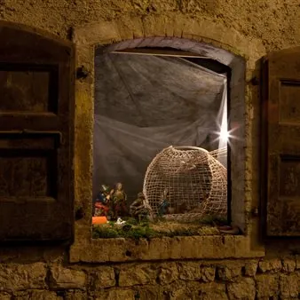

da dom 29 nov a dom 10 gen
La Magia del Natale: Magia di un borgo antico - 23aEd. Presepi a Polcenigo
Disposti dietro le finestre delle abitazioni che si affacciano lungo le vie e posizionati negli angoli più caratteristici del paese, presepi e decorazioni natalizie creano un’atmosfera incantata e danno luce al ricco patrimonio storico, artistico e architettonico dell’antico…
 Indicazioni
Indicazioni
- Costi e prenotazioni
- Costo non indicato · Prenotazione non indicata
- Programma
- Programma da verificare. Apri la fonte ufficiale per orari e possibili aggiornamenti.
- In caso di maltempo
- Nessuna indicazione specifica pubblicata.
- Note
- Acquisito automaticamente dalla fonte.
L’EVENTO
Descrizione completa
Disposti dietro le finestre delle abitazioni che si affacciano lungo le vie e posizionati negli angoli più caratteristici del paese, presepi e decorazioni natalizie creano un’atmosfera incantata e danno luce al ricco patrimonio storico, artistico e architettonico dell’antico borgo di Polcenigo.
Tra uno scorcio e l’altro, i visitatori possono immergersi in questa meravigliosa tradizione,lasciandosi trasportare dalla bellezza dei presepi e dalle iniziative natalizie pensate per grandi e piccini.
Rassegna presepi all’aperto
Borgo storico di Polcenigo tra Piazza Plebiscito e le vie del borgo
Mostra presepi
Vecchio Mulino in Via Sega
Presepe in movimento
Chiesa parrocchiale in frazione San Giovanni
Presepe galleggiante
Sorgenti nella frazione Gorgazzo
Presepi all’aperto
Frazioni di Mezzomonte, Coltura e San Giovanni
QUANDO
Dal 29 novembre 2026 al 10 gennaio 2027
Presepi all’aperto sempre visitabili, consigliata la visita all’imbrunire
Mostra Presepi al Mulino di Via Sega
5 e 6 / 8 / 12 e 13 / 19 e 20 / 26 e 27 dicembre 2026
1 - 3 / 6 / 9 e 10 gennaio 2027
ore 15.00-18.00
VISITE GUIDATE
Si effettuano visite guidate gratuite (italiano, tedesco e inglese) per gruppi da 10 a 50 persone, il Sabato e la Domenica, previa
prenotazione all’indirizzo mail info@borgocreativopolcenigo.it
Gradita un’offerta libera all’Associazione Borgo Creativo
Si segnalano inoltre le seguenti escursioni gratuite su prenotazione alla scoperta dei presepi: PassiParole_Ecomuseo Lis Aganis
VIABILITÀ
Possibilità di parcheggio per auto e pullman nell’area parcheggio adiacente alla Chiesa di San Rocco
FAMILY EXPERIENCE
Calendario delle attività specifiche dedicate alle famiglie e ai bambini sul sito presepifvg.it
IL PROGRAMMA
Programma e orari
Appuntamenti raccolti dalle fonti elencate. Dove manca un orario, non è ancora disponibile in questa scheda.
Programma pubblicato
- ore 15.00-18.00
INFORMAZIONI UTILI
Prima di partire
- Controllare la fonte prima di partire.
ORGANIZZAZIONE